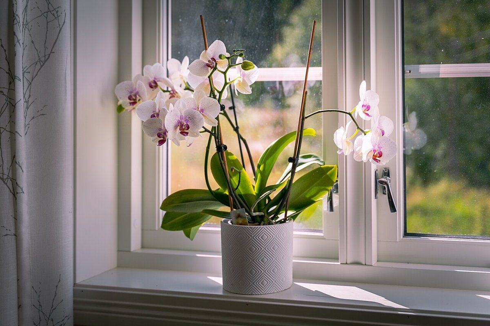

制作側の連想
「にこっと」から、セルフタイマーを思い出した
店名の由来は分かりません。制作側は「nicotto」という響きから「にこっと」を連想し、写真を撮る前の「はい、チーズ」を思い浮かべました。そこで、カメラのセルフタイマーのカウントダウン「3・2・1・にこっ」を、ページの並びに見立てています。制作側の連想で、お店の理念・由来とは無関係です。
カウントダウン
3、2、1、にこっ。
写真は飲み物や窓辺の雰囲気を伝えるフリー素材のイメージです(国外または撮影地不明)。


ご案内
確認できていること
| 所在地 | 〒479-0863 愛知県常滑市西之口7丁目17 |
|---|---|
| 電話 | なし |
| 営業時間 | 準備中 |
| 定休日 | 準備中 |
| ご予約 | 準備中 |
| 駐車場 | 準備中 |
| SNS | Instagram @nicotto_2024 |
